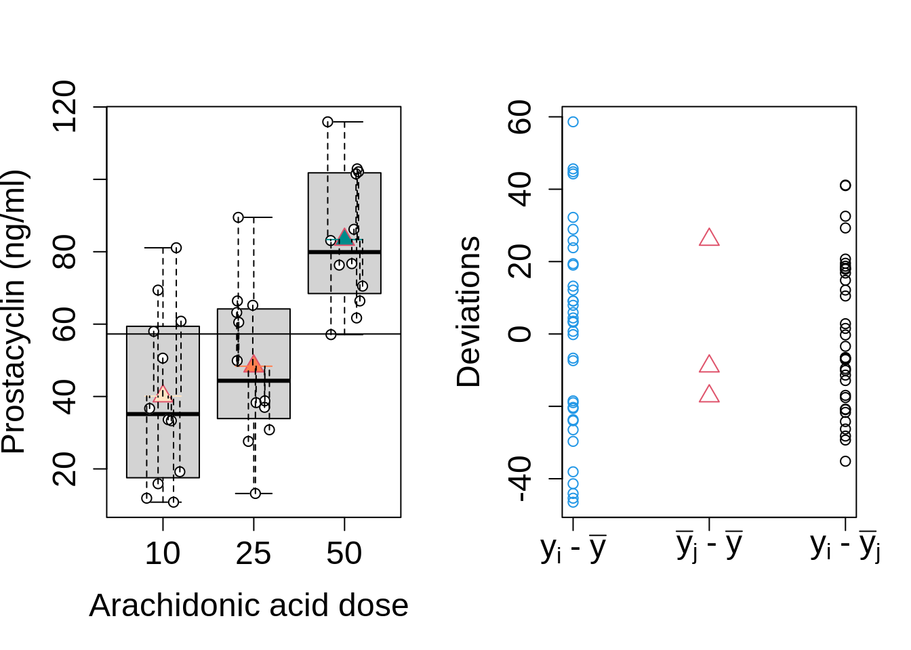

Prostacyclin Example
Researchers study the effect of arachidonic acid on prostacyclin level in blood plasma. They use 3 different concentrations of arachidonic acid:
- low,
- medium and
- high dose
Each treatment is adopted to 12 rats. They measure the prostacyclin levels in blood plasma using an elisa fluorescence measurement.
prostacyclin <- read_tsv("https://raw.githubusercontent.com/GTPB/PSLS20/master/data/prostacyclin.txt")
prostacyclin$dose <- as.factor(prostacyclin$dose)
head(prostacyclin)
##Data exploration
prostacyclin %>%
ggplot(aes(x=dose,y=prostac,fill=dose)) +
geom_boxplot() +
geom_point(position="jitter") +
ylab("prostacyclin (ng/ml)")
prostacyclin %>%
ggplot(aes(sample=prostac)) +
geom_qq() +
geom_qq_line() +
facet_grid(~dose)

The data in the three groups is approximately Normally distributed with equal variance: \[Y_i \vert \text{group j} \sim N(\mu_j,\sigma^2),\] with \(j= \text{1, 2, 3}\)
Research Question
Research question can translated in the following hypotheses
\(H_0\): the arachidonic acid concentration has no effect on the mean prostacyclin level in blood plasma in rats \[
H_0:\mu_1=\mu_2 = \mu_3
\]
\(H_1\): the arachidonic acid concentration has an effect on the mean prostacyclin level in blood plasma in rats, which implies that the at least two means are different.
In terms of the model parameters this becomes
\[
H_0:\mu_1=\mu_2 = \mu_3
\] and \[H_1: \exists\ j,k \in \{1,\ldots,g\} : \mu_j\neq\mu_k\]
Alternative approach: split null hypothesis in partial hypotheses: \[
H_{0jk}: \mu_j=\mu_k \text{ versus } H_{1jk}: \mu_j \neq \mu_k
\]
Each hypothesis can be tested via two-sample t-tests \(\rightarrow\) multiple testing problem + loss of power.
\(\rightarrow\) assess \(H_0:\mu_1=\mu_2=\mu_3\) with a single test.
Analyse of Variance
Correct solution for testing problem: ANalysis Of VAriance (ANOVA)
- We develop the method for 3 groups (prostacyclin example)
- Model data with linear model by using dummy variables.
- 1 dummy variable less than the number of groups. Here we need 2 dummy variables.
- Generalizing to g groups \(g>3\) is trivial (extra dummy variables)
Model
\[\begin{eqnarray}
Y_i &=& g(x_{i1},x_{i2}) + \epsilon_i\\
Y_i &=& \beta_0+\beta_1 x_{i1} +\beta_2 x_{i2} +\epsilon_i
\end{eqnarray}\]
- \(Y_i\) de outcome for observation \(i\) (\(i=1,\ldots, n\))
- \(\epsilon_i\text{i.i.d.} N(0,\sigma^2)\)
- and dummy variables \[x_{i1} = \left\{ \begin{array}{ll}
1 & \text{ if observation $i$ belongs to middle dose group (M)} \\
0 & \text{ if observation $i$ belongs to other dose group} \end{array}\right.\] \[x_{i2} = \left\{ \begin{array}{ll}
1 & \text{ if observation $i$ belongs to high dose group (H)} \\
0 & \text{if observation $i$ belongs to other dose group} \end{array}\right. .\]
- Low dose group (L) with \(x_{i1}=x_{i2}=0\) is reference group
Regression-model can be rewritten as a model for each group : \[\begin{eqnarray*}
Y_{i\vert \text{dose=L}} &=& \beta_0+\epsilon_i \\
Y_{i\vert \text{dose=M}} &=& \beta_0+\beta_1+ \epsilon_i \\
Y_{i\vert \text{dose=H}} &=& \beta_0+\beta_2 + \epsilon_i
\end{eqnarray*}\] with \(\epsilon_i \sim N(0,\sigma^2)\)
Interpretation of model parameters: \[\begin{eqnarray*}
\beta_0 &=& \text{E}\left[Y_i \mid \text{treatment with low dose group L}\right] \\
\beta_1 &=& (\beta_0+\beta_1)-\beta_0 = \text{E}\left[Y_i \mid \text{treatment M}\right] - \text{E}\left[Y_i \mid \text{treatment L}\right] \\
\beta_2 &=& (\beta_0+\beta_2)-\beta_0 = \text{E}\left[Y_i \mid \text{treatment H}\right]-\text{E}\left[Y_i \mid \text{treatment L}\right].
\end{eqnarray*}\]
- \(\beta_0\) is the mean outcome for group L
- \(\beta_1\) is effect (difference in mean concentration) of group M vs group L
- \(\beta_2\) is effect of group H vs group L
We reformulate the model by using \(\mu\)-notations: \[\begin{eqnarray*}
Y_{i\vert \text{dose=L}} &=& \beta_0+\epsilon_i = \mu_1+\epsilon_i \\
Y_{i\vert \text{dose=M}} &=& \beta_0+\beta_1+ \epsilon_i = \mu_2+\epsilon_i \\
Y_{i\vert \text{dose=H}} &=& \beta_0+\beta_2 + \epsilon_i = \mu_3+\epsilon_i .
\end{eqnarray*}\] with \(\epsilon_i \sim N(0,\sigma^2)\) and \[ \mu_j = \text{E}\left[Y_i \mid \text{treatment group } j\right].\]
Original null hypothese \[H_0:\mu_1=\mu_2=\mu_3\] can be formulated as \[H_0: \beta_1=\beta_2=0.\]
Model allows us to use all methods from linear regression.
- Parameter estimators for means, variances and standard errors
- Inference: Confidence intervals, hypothesis tests
- Test \(H_0: \beta_1=\beta_2=0\) with \(F\)-test.
Prostacyclin example
model1 <- lm(prostac~dose,data=prostacyclin)
summary(model1)
Call:
lm(formula = prostac ~ dose, data = prostacyclin)
Residuals:
Min 1Q Median 3Q Max
-35.167 -17.117 -4.958 17.927 41.133
Coefficients:
Estimate Std. Error t value Pr(>|t|)
(Intercept) 40.108 6.150 6.521 2.10e-07 ***
dose25 8.258 8.698 0.949 0.349
dose50 43.258 8.698 4.974 1.99e-05 ***
---
Signif. codes: 0 '***' 0.001 '**' 0.01 '*' 0.05 '.' 0.1 ' ' 1
Residual standard error: 21.3 on 33 degrees of freedom
Multiple R-squared: 0.458, Adjusted R-squared: 0.4252
F-statistic: 13.94 on 2 and 33 DF, p-value: 4.081e-05
Sum of squares and Anova
Similar to simple linear regression we will use sum of squares to derive the F-test. \[\begin{eqnarray*}
\text{SSR}&=&\sum\limits_{i=1}^n (\hat Y_i -\bar Y)^2\\
&=& \sum\limits_{i=1}^n (\hat{g} (x_{i1},x_{i2}) - \bar Y)^2\\
&=& \sum\limits_{i=1}^n (\hat\beta_0+\hat\beta_1x_{i1}+\hat\beta_2x_{i2}) - \bar Y)^2\\
&=& \sum\limits_{i=1}^{n_1} (\hat\beta_0 - \bar Y)^2 +\sum\limits_{i=1}^{n_2} (\hat\beta_0 + \hat\beta_1 - \bar Y)^2+\sum\limits_{i=1}^{n_3} (\hat\beta_0 + \hat\beta_2 - \bar Y)^2\\
&=& \sum\limits_{i=1}^{n_1} (\bar Y_1- \bar Y)^2 +\sum\limits_{i=1}^{n_2} (\bar Y_2- \bar Y)^2+\sum\limits_{i=1}^{n_3} (\bar Y_3 - \bar Y)^2\\
\end{eqnarray*}\] with \(n_1\), \(n_2\) en \(n_3\) the number of observations in each group (here \(n-1=n_2=n_3=12\)).
\[\begin{eqnarray*}
\text{SSR}&=&\sum\limits_{i=1}^n (\hat Y_i -\bar Y)^2
\end{eqnarray*}\]
Sum of squares is again equivalent with comparison of model (1) and reduced model with an intercept, only.
For reduced model the intercept is estimated by the sample mean.
This sum of squares has g-1=2 degrees of freedom:
- g=3 model parameters - 1 parameter to estimate overall sample mean or
- g=3 par. in complex model - 1 par. in reduced model.
Decomposition of Total Sum of Squares
- The convention in the Anova setting is to denote the sum of squares as SST, the Sum of Squares of the Treatment (treatment) or as SSBetween.
- The sum of squares of the regression indeed reflects the variability between the groups.
- The corresponding mean sum of squares becomes \(\text{MST}=\text{SST}/2\).
The decomposition of SSTot can be written as \[
\text{SSTot} = \text{SST} + \text{SSE}
\]
##SSTot

##SST

##SSE

Anova test
Test \(H_0: \beta_1=\beta_2=0\) with \(F\)-test. \[
F = \frac{\text{MST}}{\text{MSE}}
\]
with
- \(\text{MST}=\text{SST}/(g-1)\)
- \(\text{MSE}=\text{SSE}/(n-p)\)
- Test statistic compares the variability explained by model (MST) with the residual variability (MSE)
or
- Variability between groups (MST) to variability within groups (MSE)
- Under \(H_0\): \(F \sim F_{g-1,n-g}\), with g=3.
Anova Table
| Treatment |
d.f. SST |
SST |
MST |
F-statistiek |
p-waarde |
| Error |
d.f. SSE |
SSE |
MSE |
|
|
F-distribution with critical value (\(\alpha\)=5%) and observed F-statistic for prostacyclin example

F-distributions with different number of degrees of freedom in the nominator and denominator

###Prostacyclin example: which groups are different?
Call:
lm(formula = prostac ~ dose, data = prostacyclin)
Residuals:
Min 1Q Median 3Q Max
-35.167 -17.117 -4.958 17.927 41.133
Coefficients:
Estimate Std. Error t value Pr(>|t|)
(Intercept) 40.108 6.150 6.521 2.10e-07 ***
dose25 8.258 8.698 0.949 0.349
dose50 43.258 8.698 4.974 1.99e-05 ***
---
Signif. codes: 0 '***' 0.001 '**' 0.01 '*' 0.05 '.' 0.1 ' ' 1
Residual standard error: 21.3 on 33 degrees of freedom
Multiple R-squared: 0.458, Adjusted R-squared: 0.4252
F-statistic: 13.94 on 2 and 33 DF, p-value: 4.081e-05
With model output we can assess if the mean prostacyclin concentration differs between middle and low dose group (\(\beta_1\): dose25), and, between high and low dose group (\(\beta_2\): dose50).
The p-values do not account for multiple testing.
Post hoc analysis: Multiple comparisons of means
Naive method
In the first part we developed the \(F\)-test to assess
\[ H_0: \mu_1=\cdots = \mu_g \text{ versus } H_1: H_1: \exists\ j,k \in \{1,\ldots,g\} : \mu_j\neq\mu_k\]
- If we reject \(H_0\) we conclude that at least two means are different
- The method does not allow to identify which means are different.
A first naive method is to split \(H_0\) in partial hypotheses \[H_{0jk}: \mu_j=\mu_k \text{ versus } H_{1jk}: \mu_j \neq \mu_k\]
Falsify partial null hypotheses with two-sample \(t\)-testen
Comparison of group \(j\) with group \(k\) with two-sample \(t\)-test under the equality of means: \[T_{jk} = \frac{\bar{Y}_j-\bar{Y}_k}{S_p\sqrt{\frac{1}{n_j}+\frac{1}{n_k}}} \sim t_{n-2}\]
With
\(S_p^2\) the pooled variance estimator, \[S_p^2 = \frac{(n_j-1)S_j^2 + (n_k-1)S_k^2}{n_j+n_k-2}\]
with \(S_j^2\) and \(S_k^2\) the sample variances of group \(j\) en \(k\), respectively.
In ANOVA context we assume that the variance of all \(g\) groups is equal, i.e. the residual variance \(\sigma^2\).
Use of \(S_p^2\) is not efficient because it does not make use of all data
We can gain efficiency by using MSE \[\text{MSE}= \sum_{j=1}^g \frac{(n_j-1)S_j^2}{n-g}\]
The \(t\)-tests are thus best based on \[T_{jk} = \frac{\bar{Y}_j-\bar{Y}_k}{\text{MSE}\sqrt{\frac{1}{n_j}+\frac{1}{n_k}}} \sim t_{n-g}.\]
with(prostacyclin,pairwise.t.test(prostac,dose,"none"))
Pairwise comparisons using t tests with pooled SD
data: prostac and dose
10 25
25 0.34927 -
50 2e-05 0.00031
P value adjustment method: none
When we perform \(m\)-tests on the \(\alpha\) significance level we cannot correctly control the type I error.
We show with simulation that naive method does not work
- We simulate from an ANOVA model with \(g=3\) groups.
- The means in the ANOVA model are equal to each other, so that \[H_0: \mu_1=\mu_2=\mu_3\].
- For each simulated dataset we conduct \(m=3\) pairwise two-sample \(t\)-test
- As soon as one of the \(p\)-values is below significance level \(\alpha=5\%\), we reject \(H_0: \mu_1=\mu_2=\mu_3\) because two means are different according to the \(t\)-tests.
- We rapport the relative frequency of rejection of the global null hypothesis, i.e. the probability on a type I error \(H_0: \mu_1=\mu_2=\mu_3\).
g<-3 # number of treatments (g=3)
ni<-12 # number of observations in each group
n<-g*ni # total number of observation
alpha<-0.05 # significance level of individual test
N=10000 # number of simulations
set.seed(302) #seed to reproduce results exactly
trt=factor(rep(1:g,ni)) #factor
cnt<-0 #counter for erroneous rejections
for(i in 1:N) {
#if (i%%1000==0) cat(i,"/",N,"\n")
y <- rnorm(n)
tests<-pairwise.t.test(y,trt,"none")
reject<-min(tests$p.value,na.rm=T)<alpha
if(reject) cnt<-cnt+1
}
cnt/N
[1] 0.1209
Probability on the type I error equals 12.1%
It is more then twice \(\alpha=5\)%.
If we repeat the simulation with g = 5 groups (i.e. 10 pairwise t-tests) we find a type I error of 28.0% instead of the desired 5%.
The simulation study illustrates the multiplicity problem
- Classical p-values can only be compared with the significance level \(\alpha\), if the conclusion is based on a single p-value.
- Here the final decision is based on \(m=g\times(g-1)/2\) \(p\)-values.
We first discuss on the extension of the concept of type I errors and then introduce some solutions
Family-wise error rate
When \(m>1\) tests are used to make one decision it is necessary to correct for the risk on false positive results (type I errors).
Most procedures for multiple testing assume that all \(m\) null hypotheses are true.
So one tries to control the risk on at least 1 false positive on the family wise error rate (FWER) \(\alpha_F\), typical \(\alpha_F=0.05\).
Bonferroni correction
When we conduct \(m\) independent test each on the significance level \(\alpha\), then \[\begin{eqnarray*}
\alpha_F&=&\text{P}[\text{at least 1 Type I fout}]\\
&=&1-(1-\alpha)^m \leq m\alpha
\end{eqnarray*}\]
If we assess 5 tests on the 5% significance level then the FWER \(\approx 25\%\). {10pt}
By conducting them at the 1% significance level the FWER \(\approx 5\%\).
The Bonferroni correction controls the FWER on \(\alpha_F\) by setting \[\alpha=\alpha_F/m\] for each of the \(m\) pairwise comparisons
An alternative approach is to report
- adjusted p-values that can be compared to the FWER \(\alpha_F\) level: \[\tilde{p}=min(m\times p,1)\]
- and \((1-\alpha_F/m)100\%\) confidence intervals.
prostacyclin example
with(prostacyclin,pairwise.t.test(prostac,dose, data = prostacyclin, p.adjust.method="bonferroni"))
Pairwise comparisons using t tests with pooled SD
data: prostac and dose
10 25
25 1.00000 -
50 6e-05 0.00094
P value adjustment method: bonferroni
- The conclusions remain similar, except that the FWER is now controlled at \(\alpha_F=5\%\) and that the \(\tilde{p}\)-values are larger with a factor 3.
The same analysis can be conducted in the multcomp R package that is developed for multiple testing in linear models.
model1.mcp<-glht(model1,linfct=mcp(dose="Tukey"))
summary(model1.mcp,test=adjusted("bonferroni"))
Simultaneous Tests for General Linear Hypotheses
Multiple Comparisons of Means: Tukey Contrasts
Fit: lm(formula = prostac ~ dose, data = prostacyclin)
Linear Hypotheses:
Estimate Std. Error t value Pr(>|t|)
25 - 10 == 0 8.258 8.698 0.949 1.000000
50 - 10 == 0 43.258 8.698 4.974 5.98e-05 ***
50 - 25 == 0 35.000 8.698 4.024 0.000943 ***
---
Signif. codes: 0 '***' 0.001 '**' 0.01 '*' 0.05 '.' 0.1 ' ' 1
(Adjusted p values reported -- bonferroni method)
Note, that the user has to define custum functions to obtain Bonferonni adjusted confidence intervals.
Bonferonni confidence intervals are not implemented because better methods exist for multiple testing.
The function below is added here merely for completeness, but we will generally use the default method for multiple testing in multcomp.
calpha_bon_t<-function(object,level)
abs(
qt(
(1-level)/2/nrow(object$linfct),
object$df
)
)
confint(model1.mcp,calpha=calpha_bon_t)
Simultaneous Confidence Intervals
Multiple Comparisons of Means: Tukey Contrasts
Fit: lm(formula = prostac ~ dose, data = prostacyclin)
Quantile = 2.5222
95% confidence level
Linear Hypotheses:
Estimate lwr upr
25 - 10 == 0 8.2583 -13.6790 30.1957
50 - 10 == 0 43.2583 21.3210 65.1957
50 - 25 == 0 35.0000 13.0626 56.9374
Evaluate Bonferroni method via simulation
g<-3 # number of treatments (g=3)
ni<-12 # number of observations in each group
n<-g*ni # totaal number observation
alpha<-0.05 # significance level of individual test
N=10000 # number of simulaties
set.seed(302) #seed to reproduce results exactly
trt=factor(rep(1:g,ni)) #factor
cnt<-0 #counter for erroneous rejections
for(i in 1:N) {
#if (i%%1000==0) cat(i,"/",N,"\n")
y <- rnorm(n)
tests<-pairwise.t.test(y,trt,"bonferroni")
reject<-min(tests$p.value,na.rm=T)<alpha
if(reject) cnt<-cnt+1
}
cnt/N
[1] 0.0457
We find an FWER of 4.6%, which is slightly conservative.
For simulations of \(g=5\) group the FWER is \(4.1\%\) (more conservative).
By using Bonferroni the probability on at least one false positive result is lower than \(< \alpha_F\).
Power loss because the real FWER is smaller than 5%
Tukey Method
Less conservatieve
Implementation approximates the null distribution of posthoc tests via simulations
Results can change slightly if the posthoc analysis is repeated
Details on the method falls outside the scope of the short course
Is the default method in the multcomp package:
- adjusted p-values
- adjusted confidence intervals
Captopril example
model1.mcp<-glht(model1,linfct=mcp(dose="Tukey"))
summary(model1.mcp)
Simultaneous Tests for General Linear Hypotheses
Multiple Comparisons of Means: Tukey Contrasts
Fit: lm(formula = prostac ~ dose, data = prostacyclin)
Linear Hypotheses:
Estimate Std. Error t value Pr(>|t|)
25 - 10 == 0 8.258 8.698 0.949 0.613390
50 - 10 == 0 43.258 8.698 4.974 < 1e-04 ***
50 - 25 == 0 35.000 8.698 4.024 0.000835 ***
---
Signif. codes: 0 '***' 0.001 '**' 0.01 '*' 0.05 '.' 0.1 ' ' 1
(Adjusted p values reported -- single-step method)
Simultaneous Confidence Intervals
Multiple Comparisons of Means: Tukey Contrasts
Fit: lm(formula = prostac ~ dose, data = prostacyclin)
Quantile = 2.4539
95% family-wise confidence level
Linear Hypotheses:
Estimate lwr upr
25 - 10 == 0 8.2583 -13.0849 29.6016
50 - 10 == 0 43.2583 21.9151 64.6016
50 - 25 == 0 35.0000 13.6567 56.3433
plot(confint(model1.mcp))

###Evaluate Tukey method
g<-3 # number of treatments (g=3)
ni<-12 # number of observations in each group
n<-g*ni # totaal number observation
alpha<-0.05 # significance level of individual test
N <- 10000 # number of simulations
set.seed(302) #seed to reproduce results exactly
trt <- factor(rep(1:g,ni)) #factor
cnt<-0 #counter for erroneous rejections
for(i in 1:N) {
#if (i%%1000==0) cat(i,"/",N,"\n")
y <- rnorm(n)
m<-lm(y~trt)
m.mcp<-glht(m,linfct=mcp(trt="Tukey"))
tests<-summary(m.mcp)$test
reject<-min(as.numeric(tests$pvalues),na.rm=T)<alpha
if(reject) cnt<-cnt+1
}
cnt/N
[1] 0.0503
Conclusions: Prostacyclin example
Entire analysis for prostacyclin example
Anova before posthoc tests: F-test has a higher power than pairwise t-test
- F-test uses all data
- For F-test we do not need to correct for multiple testing: one test is conducted for the general omnibus hypothesis
model1 <- lm(prostac~dose,data=prostacyclin)
anova(model1)
model1.mcp<-glht(model1,linfct=mcp(dose="Tukey"))
summary(model1.mcp)
Simultaneous Tests for General Linear Hypotheses
Multiple Comparisons of Means: Tukey Contrasts
Fit: lm(formula = prostac ~ dose, data = prostacyclin)
Linear Hypotheses:
Estimate Std. Error t value Pr(>|t|)
25 - 10 == 0 8.258 8.698 0.949 0.613433
50 - 10 == 0 43.258 8.698 4.974 < 1e-04 ***
50 - 25 == 0 35.000 8.698 4.024 0.000922 ***
---
Signif. codes: 0 '***' 0.001 '**' 0.01 '*' 0.05 '.' 0.1 ' ' 1
(Adjusted p values reported -- single-step method)
Simultaneous Confidence Intervals
Multiple Comparisons of Means: Tukey Contrasts
Fit: lm(formula = prostac ~ dose, data = prostacyclin)
Quantile = 2.4526
95% family-wise confidence level
Linear Hypotheses:
Estimate lwr upr
25 - 10 == 0 8.2583 -13.0736 29.5902
50 - 10 == 0 43.2583 21.9264 64.5902
50 - 25 == 0 35.0000 13.6681 56.3319
- There is an extreme significant effect of arachidonic acid on the average prostacyclin blood concentration in rats (\(p<0.001\)). The average prostacyclin concentration is higher in the high dose group than in the low and moderate dose group (both p-values are smaller than \(p<0.001\)).
- The average concentration in the high dose group is 43.3ng/ml (95% CI [21.9,64.6]ng/ml) and 35ng/ml (95% BI [13.6,56.4]ng/ml) higher than in the low and middle dose group, respectively.
- The difference in average prostacyclin concentration between the moderate and low dose group is not significant (p=0.61). (All p-values and confidence intervals for post-hoc tests are corrected for multiple testing using the Tukey method).
